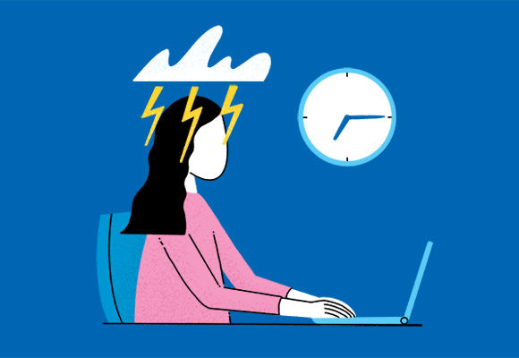
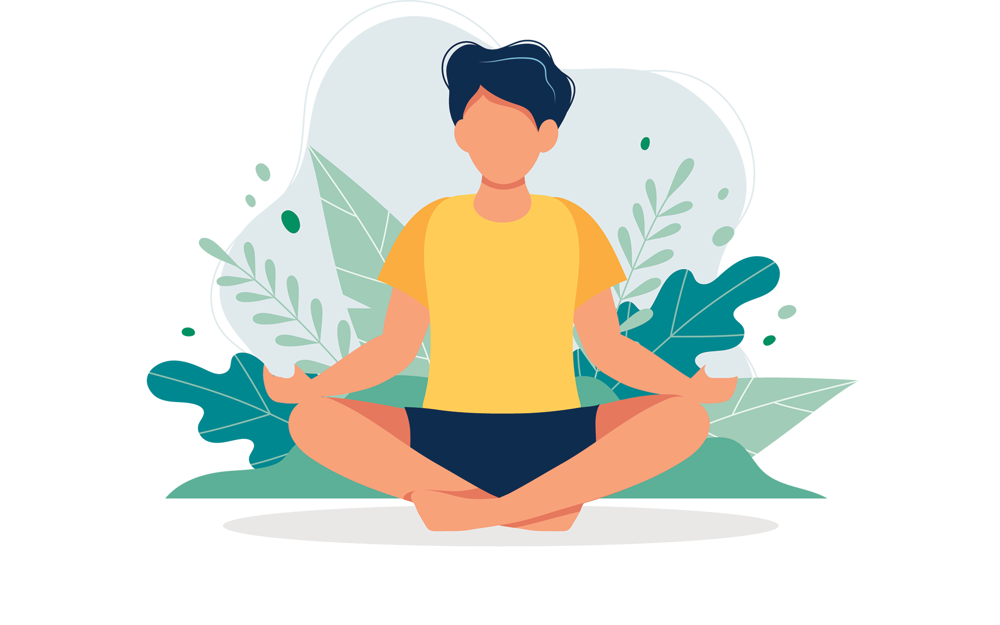

Science says that people who have good mental health have fewer negative emotions and are able to bounce back from hardships more quickly. Likewaise, having good mental health means being able to hold onto positive emotions longer and appreciate them more.
2. Reduce your stress

Everyone feels stressed from time to time. Stress can give you a rush of energy when it’s needed most. But if stress lasts a long time—a condition known as chronic stress—those “high-alert” changes become harmful rather than helpful. Learning healthy ways to cope with stress can also boost your resilience.
3. Sleep Well
To fit in everything we want to do in our day, we often sacrifice sleep. But sleep affects both mental and physical health. It’s vital to your well-being. When you’re tired, you can’t function at your best. Sleep helps you think more clearly, have quicker reflexes and focus better. Take steps to make sure you regularly get a good night’s sleep.
3. Practice Mindfulness

The concept of mindfulness is simple. This ancient practice is about being completely aware of what’s happening in the present—of all that’s going on inside and all that’s happening around you. It means not living your life on “autopilot.” Becoming a more mindful person requires commitment and practice. Here are some tips to help you get started.